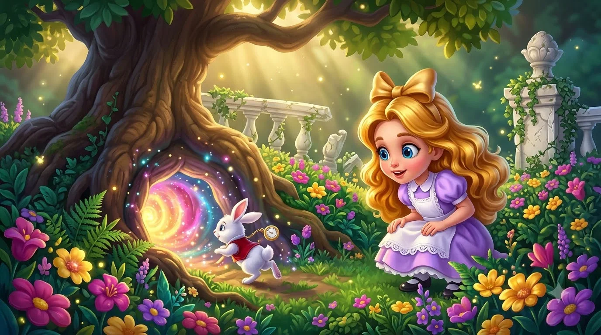

앨리스와 색깔 정원
Alice and the Color Garden · What Color Is It?
3학년 영어 · Lesson 9 · 3차시 (교과서 108~110쪽)
3학년 반 번 이름
🐇 1. 흰 토끼의 수수께끼 Sounds Fun · Read Me
토끼가 땅에 쓴 단어의 첫 글자가 지워졌어요. 잘 듣고 l 또는 r을 써요.
Look! Look! Rabbit! Rabbit!점점 빠르게 5번 읽고 칠해요 ♡♡♡♡♡
🌹 2. 카드 정원사의 비밀 설계도 Read and Do
문장을 읽고 숫자에 맞는 색을 칠해요. 다 칠하면 무엇이 나타날까요?
①It's purple.
②It's red.
③It's green.
④It's yellow.
완성된 그림은?
🎨 3. 마법 물감 섞기 Write and Do
두 물감을 섞으면 무슨 색이 될까요? 알맞은 단어를 쓰고, 동그라미에 그 색을 칠해요.
| red | + | blue | = | |
| yellow | + | blue | = | |
| red | + | yellow | = | |
보기: purple · green · orange
👑 4. 여왕의 질문 Write and Talk · Mission 3
네모에 내가 좋아하는 색을 칠하고, 그 색을 영어로 써요. 짝에게 물어보고 대답해요!
A: What color is it?
B: It's .
A: What color is it?
B: It's .
A: What color is it?
B: It's .
📔 5. 앨리스의 일기 · My ABC Diary
오늘 배운 단어를 따라 쓰고, 한 번 더 써 봐요.
I like . (내가 좋아하는 색)
🌹 오늘 여왕의 장미를 몇 송이 빨갛게 만들었나요? 1 2 3 4 5 6 | 가장 재미있었던 활동: